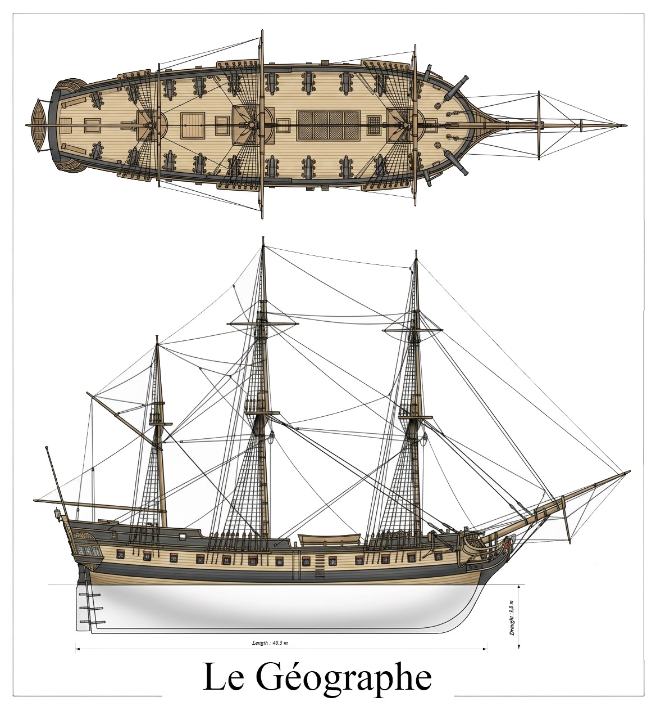

Le Géographe était une corvette française et le bâtiment principal de l’expédition Baudin. Il appareilla du Havre le 19 octobre 1800 avec 118 hommes à bord. Cet effectif comprenait l’équipage proprement dit, 45 officiers de tous grades et 12 membres scientifiques officiellement attachés à l’expédition.
Ce navire est très probablement l’ex-Uranie, l’une des corvettes issues du programme naval révolutionnaire de 1793. Sa construction fut lancée en 1794 à Honfleur, dans le chantier de l’entrepreneur Loquet, sur ordre du ministre de la Marine et des Colonies — à l’époque Gaspard Monge —, d’après les plans du sous-ingénieur Le Tellier. Encore inachevé, le bâtiment fut rebaptisé Galatée en 1799, nom d’une Néréide de la mythologie grecque. Son constructeur refusa d’abord de le mettre à l’eau, faute d’avoir été payé. Le lancement eut finalement lieu en juin 1800, et le navire fut renommé Le Géographe le 23 août 1800, nom qu’il conserva jusqu’à sa radiation en 1819.
Long de 124 pieds, mesurés de râblure en râblure à la flottaison, et large de 30 pieds au maître-bau, Le Géographe avait un déplacement de 796 tonneaux. Lors de son lancement, il était armé de 24 canons de 12 livres.
Le Géographe acheva son voyage en arrivant à Lorient en mars 1804.
